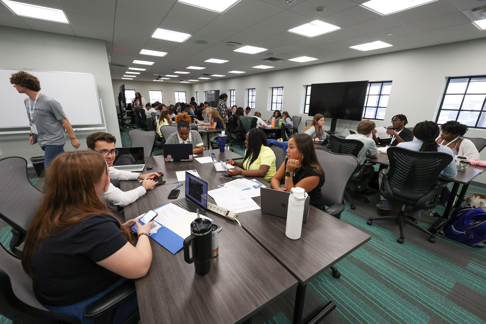

ACCOUNTING • TECHNOLOGY • BUSINESS
Hi, I'm Adrian.
Welcome to my website! Hopefully my resume caught your eye. Here I'll go more in depth about who I am, and what I've done. I'm an accounting student interested in tax, audit, technology, and helping operations run at maximum efficiency.
About Me
I'm an accounting student interested in developing my experience in accounting, finance, and technology. Outside of accounting, I enjoy unwinding with some travel, as well as occasionally challenging myself with creative projects.
With the start of my Junior year at the Jacob's School of Management, I've been more eager than ever to get my foot into the door of all things accounting. Whether it's clubs, internships, or any other position - I'm ready for the challenge!
I have some travel plans coming up soon that I'm very excited for. I've been to Europe (Germany, France, and Belgium); China (Guangzhou, Hong Kong); and Japan (Tokyo, Kusatsu).
Experience
Finance & Operations Assistant
University at Buffalo Business & Entrepreneur Partnerships • 2026
I started working with the BEP in June of 2026 as an extern from the SEE (Sophomore Externship Program), run by Hadar Borden with the UB CoLab. I initally started in a general Student Assistant role, having no real primary tasks besides manning the front desk and keeping up with every day operations. However, as I got acclimated to the role and started leaning into my strengths more, after deliberation with my supervisor I now handle much more than general upkeep.
Currently my job does still include those basic tasks, but I also have a much bigger hand in the finance and administrative side of the BEP. This includes managing invoices in QuickBooks; creating, maintaining, and updating our Salesforce database; and creating and distributing paperwork for our clients. I also get to handle the monthly internal newsletter, as well as being the general main point of contact for any communications with the BEP.
Overall, I'm really satisfied with this role and am very grateful to my supervisor for offering to have me stay after by brief externship tenure. Getting experience in an office setting has been really helpful in confirming that yes - this is an environment I would be happy having a career in!
Volunteer Tax Preparer
Volunteer Income Tax Assisstance (VITA) • 2026
I started volunteering at my local VITA site at the beginning of 2026. Embarassingly enough, I had never done a tax return before (not even my own!) so I wasn't really sure what to expect. Thankfully, all the staff were more than willing to help train me and get me accustomed to doing simple returns, so I completed the IRS basic certification early on in January.
Once I was all set to start, I hit the ground running and started doing returns for people all by myself after about 2 days shadowing my peers. Helping out my local community and seeing the smiles on people's faces after I tell them how much their refund is was such a great feeling! I'm almost excited for the next busy season so I can get back in the swing of things.
As a whole, volunteering for VITA has been (and hopefully will continue to be) a great experience and a fantastic way to get my foot in the door of what accountants actually do. And I actually do enjoy doing tax. I think there's some aspect of it that really engages the problem solving mode in my head.
Residential, Commercial, & Automotive Locksmith Technician
RedKey LLC • 2023-2025
This was my high school job, but I did still gain some valuable skills from it. I think the most transferrable skills would be inventory management - which seems to have followed me to my current position at the BEP, and how to work with clients. Starting with the inventory aspect, we would have this issue where a client would need a key made for a certain vehicle or a specific lock, but because there wasn't a functional inventory system in place we wouldn't easily know if we had the materials we needed on hand. Because of this, there would be occaisions where someone would go out for a job and have to waste time sourcing inventory because they didn't have what they needed on them. So I created an inventory system to keep track of all of the various keys and blanks we had, just using an Excel spreadsheet and manually keeping it up to date whenever a job was done or when we ordered more inventory. Regarding the client facing skills, it's just an important thiing to have. In almost all jobs you have to look like a good representation of your employers, and you also have to know how to handle difficult situations with clients.
I think this job was a good start for me. I wouldn't say I'm naturally inclined to be a tradesman, so as a result I became a more well-rounded person. I was also very timid and shy back in my high school days so a job like this where you service new people every day really helped to get me out of my shell. Also - being handy definitely has its perks around the office. I am in charge of all things do do with keys and locks at the BEP, which come up a lot more than you would expect at first glance. Companies move in and out of our space all the time and someone's gotta keep track of the keys! And yes, I revamped and updated their key inventory system.
Projects & Extracurricular

University at Buffalo Accounting Association
As a member of the University at Buffalo Accounting Association, I've had the opportunity to attend professional events, meet accounting firms, and learn more about different career paths within the profession.
Read More →
TechBuffalo Tech Design Challenge
During this two day design sprint I worked with a team to create, prototype, and implement a working solution for a real issue that Mission: Ignite, a local nonprofit organization had. The key idea in navigating this project was viewing the problem from the client's perspective and coordinating a team to create our vision.
Read More →Contact
Feel free to reach out through LinkedIn or email.